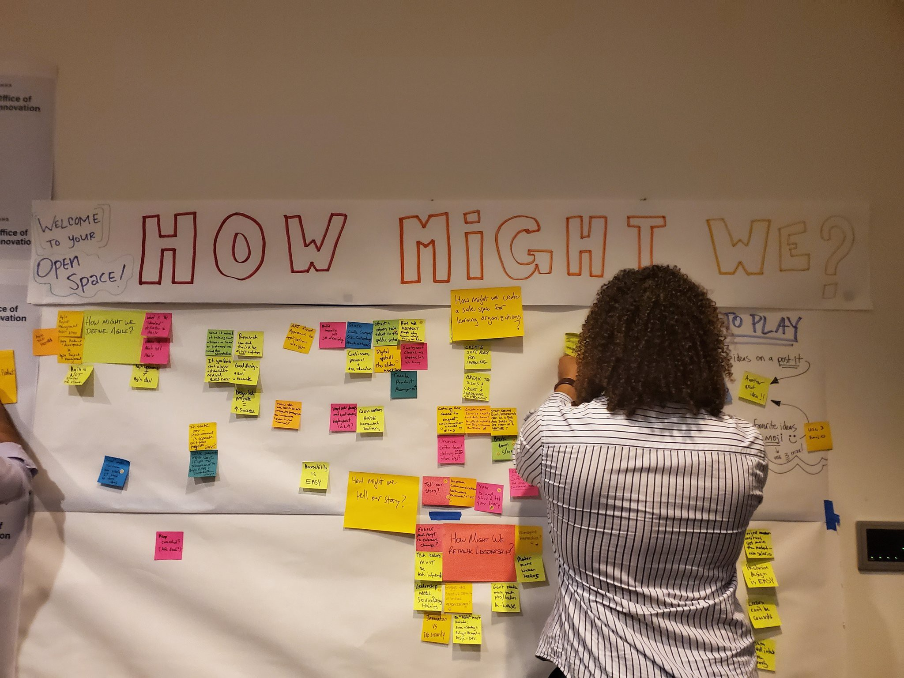

By Angelica B. Quirarte Arias · Oct 31, 2019

Over the last decade, governments around the world have started asking themselves, “How can we use digital to better serve our people?”
California government has also begun to test new approaches. We want to accelerate these efforts by re-imagining CA.gov.
CA.gov is the state’s official homepage. But more important, it should be the place where the people of California go to get the information and services they need.
This vision is championed by the Governor’s Office and the leaders from the Government Operations Agency and the California Department of Technology. This is not business as usual.
To make that happen, we plan to follow the example set by many of those other teams around the world, and start with a discreet prototype: an alpha.
As Product Owner for the CA.gov Alpha, my role is to lead a small team of public servants and outside experts in answering the fundamental question. How do we make sure that the digital information and services Californians need are easily accessed, intuitively understood and simply used?
Our priority: ask and learn from what Californians’ need
It’s an approach that sounds like common sense. But for government, it is relatively new and often hard to accomplish. In fact, this approach has really only gained traction over the last decade, driven by the success of the UK Government Digital Service, which radically reimagined how government understands, builds and provides digital services.
The work that was started in Europe has turned into a movement, and spread to the US with the creation of government agencies like 18F and the US Digital Service and NGOs like Code for America. And countries around the world have taken a leap to redesign the front door of their government, their homepages. In Peru, they created gob.pe. In Mexico it’s gob.mx. In Israel there’s gov.il. And the Canadian province of Ontario created ontario.ca.
These are just a few examples of what is truly a radical approach to digital information and services in the context of delivering government services.
It’s radical because it starts by asking a basic question: what do users need? And it’s made even more radical when you consider that this approach answers that question, not by delivering a monolithic, final product that costs hundreds of millions of dollars and maybe works, maybe doesn’t — but rather by developing a discrete prototype that is improved and iterated on based on user feedback. There is value in the process of learning through open iteration because it ultimately makes government better.
This is exactly what we’re proposing to do here in California with CA.gov.
Building on best practices
We’re going to follow the example and best practices established by the people who have done this before and that means starting with the alpha.
We’re thrilled to be working in partnership with Code for America, which has helped define and build civic tech in the US; and with Public Digital, whose partners led the GOV.UK effort and founded the UK Government Digital Services.
We are also looking forward to tapping into the collective experience and expertise of the civic tech community. This will be extremely helpful for our team in the alpha phase and beyond, because it will allow us to leverage the incredible experience there to find and hire staff, apply user research, deploy human-centric design, develop a roadmap that puts into practice the iterative, agile, approach that’s at the heart of this work, and, ultimately, deliver a product built to be improved and iterated on in order to better serve the people of California.
Speaking of improving and iterating…
It’s really important to note that we will be sharing lessons learned and how we work throughout the process. We will work in the open, be agile, work quickly, iterate, test, and learn as we build and improve the CA.gov Alpha.
Working this way sounds unorthodox — and it is, at least within government. But it’s a process that underpins the experiences we all have whenever we navigate the web. The platforms that we turn to every day to buy stuff, get rides from strangers, and find just about anything, were all built and continue to evolve based on this very same approach.
For us here on the Alpha team, working in an agile and open way is essential to creating the opportunity to experiment and innovate in ways that embody the spirit of California and move us forward.
This is only possible with a team
Of course, in order to do any of this, we have to first build a team.
We’ve already identified a product owner, interaction designer, developer, technical architect, and team success manager. Over the coming months, these passionate, committed public servants, technologists and others will be working on an alpha that prioritizes user needs and shows how government can better use digital to better serve Californians.
Our multi-disciplinary team will be composed of staff from state agencies and outside subject matter experts in user research and design. It will be empowered to try new things to re-imagine how things are done in government. It will work in the open, documenting our progress (and yes, failures) as we design our product.
This blog post is the first step on this path.
We’re still assembling our team.
Think you might be interested?
We’re still looking for people who are as psyched as we are about our mission. Maybe you’re one of them. We are looking to contract or hire:
Technical Lead
Delivery Manager
User Researcher
Content Designer
Product Designer
Learn more about these opportunities through this interest form.
And in closing…
This is the start. This is the first time we’re communicating about this effort, and we wanted to make sure that this post really drives home the incredible opportunity we have here.
Governor Newsom’s “Citizenville” envisioned a government that better serves its people by better understanding their needs. And right now, there is no question that California is a state dealing with many needs and many challenges. We believe that a big part of meeting these needs and addressing these challenges starts by re-imagining CA.gov.
Join this mission. Together we can fulfill the vision of a California for All.
Follow our journey on Twitter and Medium.